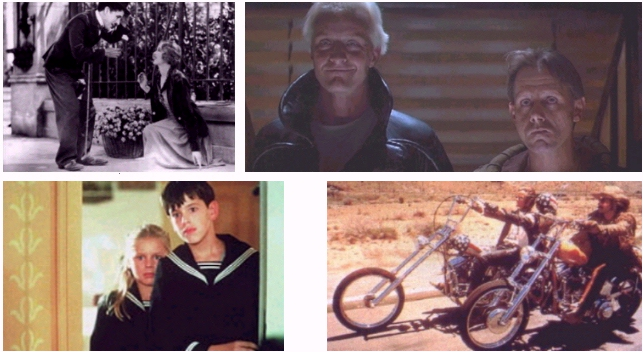
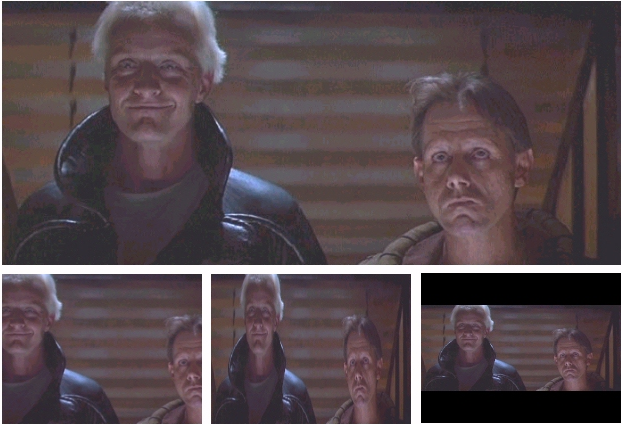

Responder a este comentário
A Bola ficou oval
por Giba Assis Brasil em 16 de agosto de 2008O começo dessa história é bastante conhecido: nos anos 1950, assustado com o popularidade crescente da televisão, o cinema inventou alguns truques pra trazer o público de volta às salas, e o mais importante deles foi a tela larga. Até então, as telas de cinema e televisão tinham tamanhos bem diferentes, mas a mesma proporção 1.33, ou seja, eram retângulos (no caso da TV, um retângulo com as bordas arredondadas) em que a largura era 33% maior que a altura.
A partir dos anos 1950, a TV continuou com a mesma proporção de 1.33, mas os filmes passaram a ser feitos no padrão europeu de 1.66, ou no padrão norte-americano de 1.85 ou ainda no "padrão Cinemascope" (também norte-americano, mas apenas para as grande produções) de 2.35, uma tela em que a largura é mais do que o dobro da altura.

"Luzes da cidade" (1931) foi rodado em proporção 1.33. "Blade runner" (1982) em 2.35. "Fanny e Alexandre" (1982) em 1.66. E "Sem destino" (1969) em 1.85.
Com isso, Hollywood conseguiu trazer parte do seu público de volta, mas criou um problema que terminou se voltando contra ela própria: como o público da TV continuou aumentando, o cinema veio a se tornar cada vez mais dependente da nova mídia, e a grande questão passou a ser: como exibir um filme rodado numa certa proporção dentro de uma tela que tem outra proporção? Ou, em outras palavras: como encaixar um retângulo dentro do outro, se eles têm proporções diferentes?
Se o filme foi rodado em 1.66 (padrão europeu), a diferença não é tão grande assim: apenas 20% da imagem não cabem na tela da TV (proporção 1.33). No caso do padrão norte-americano (1.85), a diferença já chega a 28%. E, para filmes rodados em Cinemascope (2.35), 43% da imagem, quase a metade, não cabe na TV.
Contra a geometria, não existe mágica. Classicamente, a questão tem três respostas possíveis, nenhuma delas perfeita: (1) cropagem - corta-se 20% ou 43% da imagem e reza-se pra que não tenha nada importante acontecendo nos cantos, o que quase nunca dá certo; (2) distorção - aperta-se a imagem no sentido da largura, de maneira que todos os objetos fiquem espichados verticalmente, e que os personagens fiquem todos com a cara do Marco Maciel; (3) barras: simplesmente coloca-se toda a imagem do filme original dentro da tela, em tamanho um pouco menor, e preenche-se o espaço que sobrar com barras pretas, o que os americanos chamam de "letterbox".

Qual é a forma menos pior de encaixar "Blade runner" na tela de TV? Cropando, distorcendo ou colocando barras?
{kind=link}
Qualquer pessoa com um mínimo de noção de estética da imagem, ou ao menos com as informações corretas, sabe que a terceira opção (as barras pretas) é a menos ruim das três, pois é a única que preserva a imagem original do filme, ainda que em tamanho menor. Mas, como a televisão nunca se preocupou muito com estética ou informação correta, espalhou-se a lenda de que o público não aceita as tais barras: o espectador-médio-padrão-Homer-Simpson faria sempre o raciocínio do "eu paguei a TV inteira, portanto quero a tela inteira" - sem que ninguém se esforçasse em explicar pra ele que, nesse caso, ele nunca vai ter o filme inteiro.
Na prática, a televisão terminou inventando duas outras formas de encaixar o inencaixável: (4) o "pan & scan", uma tentativa de cropagem seletiva, em que as partes cortadas do filme podem estar ora do lado direito, ora do lado esquerdo, conforme onde está o centro de atenção da imagem em cada momento; e (5) a "mistureba" - um pouquinho de barras, um pouquinho de distorção e o resto de cropagem. Poupem-me de um comentário sobre a eficiência desses métodos.
No início dos anos 1980, quando se começou a discutir o que seria a televisão de alta definição, um engenheiro norte-americano chamado Kerns Powers sugeriu que ela tivesse uma proporção que fosse a média dos padrões já existentes, ou seja, 1.77. Seria uma forma de mostrar a imagem completa de qualquer filme ou programa de TV usando pequenas barras - verticais, para o que foi rodado em 1.33 ou 1.66; ou horizontais, para o que foi feito em 1.85 ou 2.35.
O novo problema é que o 1.77, que foi pensado como uma proporção média, passou a ser um novo padrão.
A programação de TV, ao menos no Brasil, continua sendo transmitida em 1.33 (no caso dos filmes, já cropado da imagem original). Mas os bares e restaurantes, as vitrines de lojas de eletrodomésticos, os dentistas, cabeleireiros e mesmo os lares dos novos consumidores já estão na era do 1.77. E "não pega bem" ter uma TV de tela larga pra mostrar qualquer coisa que seja na velha proporção 1.33, com aquelas barras laterais.
Portanto, é preciso dar um jeito. E o jeito mais fácil que os controles remotos dão é a teclinha "wide screen", que significa "aperte aqui se o programa que você está assistindo tiver sido rodado em 1.77", mas que todo mundo interpreta da forma mais fácil: "aperte aqui e o mundo todo vai se encaixar magicamente na sua nova TV pela qual você pagou tão caro". A imagem 1.33 é espichada 33% pros lados, e ocupa toda a tela 1.77.
Um dos resultados foi que, de repente, o Brasil passou a praticar futebol americano com os pés - as regras continuam as mesmas, mas a bola ficou oval, assim como a lua, o sol, o símbolo da Globo e qualquer outra coisa que um dia tenha sido redonda. O outro resultado foi que todos os atores, apresentadores e demais celebridades televisivas (inclusive os jogadores de futebol) ficaram 33% mais gordos.
E é por isso, na verdade, que os Ronaldos parecem estar tão fora de forma ultimamente.
Aperte na tecla "wide screen" e a tela fica uma maravilha. Mas e a bola? E o peso, a largura dos ombros, o formato do rosto?
{kind=link}
TEM MAIS:
Mais sobre proporção de tela (aspect ratio) na Wikipédia em inglês.
A SMPTE, associação de engenheiros de TV dos EUA, reconhece a importância do trabalho do Dr Kerns Powers.
Na verdade, a imagem de uma esfera distorcida horizontalmente não toma a forma oval, mas de um elipsóide.